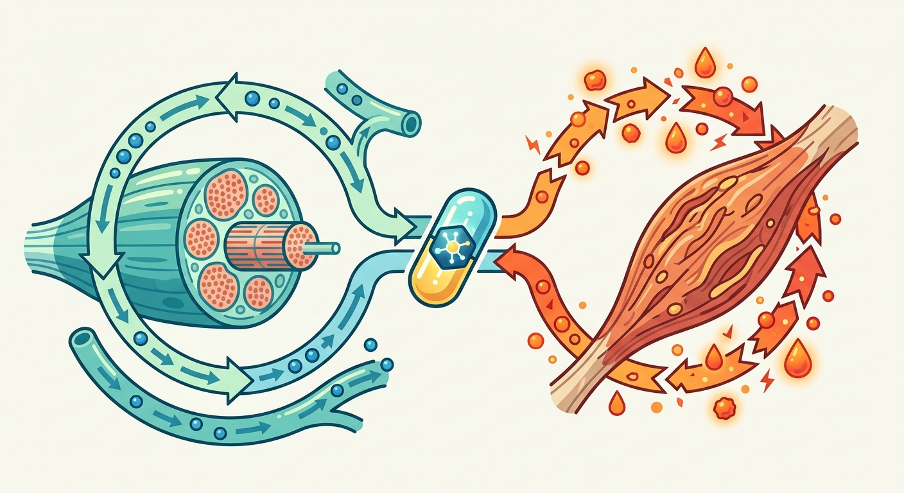
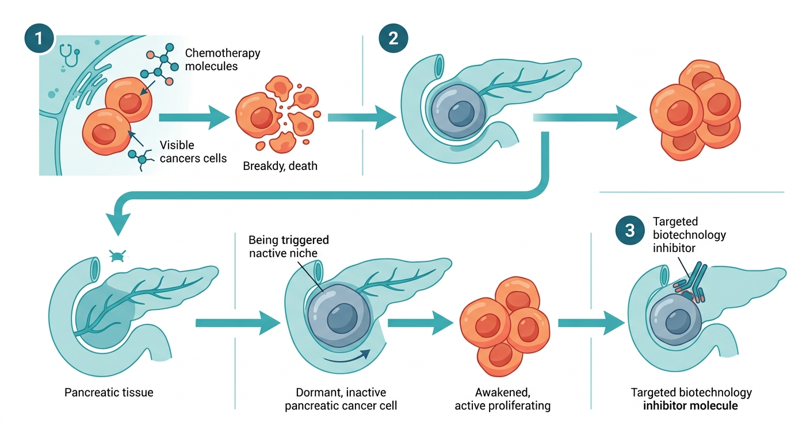
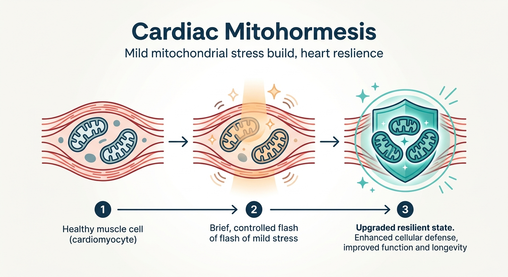

Why it matters: Sarcopenia has long been treated as a localized muscle-wasting disease, but this groundbreaking study reveals it is actually a systemic metabolic failure between the liver and muscle, opening up a highly druggable pathway to reverse aging-related frailty.
Read Full Story →

Why it matters: This breakthrough reveals a precise, druggable cellular cascade—the senescence-NET-CCDC25 axis—that explains why chemotherapy paradoxically triggers metastatic relapse, offering a major new target for combination therapies in oncology and longevity biotech.
Read Full Story →

Why it matters: By decoding the exact metabolic pathway of mitohormesis, this study reveals how transient mitochondrial stress epigenetically rewires the mammalian heart for lifelong resilience—offering a blueprint for therapeutics that protect against age-related cardiac decline without the need for actual cellular damage.
Read Full Story →